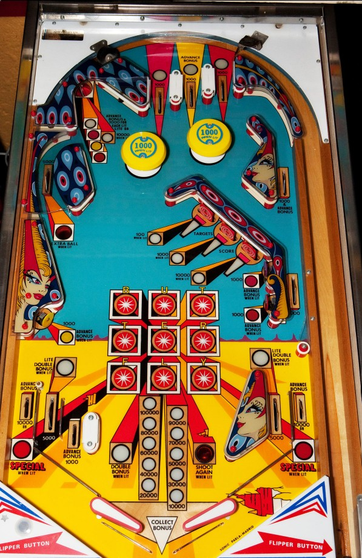

Top lanes score 1,000 points, and the center top lane advances the bonus. Each top lane also lights one light in front of the upper left saucer.
The upper left saucer scores 1 bonus advance plus 1,000 points for each lit insert. One insert is lit for free; the other three are lit by scoring the top lanes or the lower left and right standup targets. If the base bonus is currently maxed at 100,000 points, the upper left saucer will be lit for 10,000 points.
Drop targets score 100 points each. This is increased to 1,000 points each after 1 completion and 10,000 points each after 2 completions. Completing the drop targets once lights the far left in lane and the right in lane for Double Bonus. Completing the drop targets twice lights the upper left side lane for extra ball. Completing the drop targets 3 times lights the out lanes for Special. A setting exists that allows the 4th completion of the drop targets to score an instant Special. Each completion of the drop targets also lights three letters in Butterfly in the center of the table; lit star rollovers score 1,000 points.
The upper left side lane scores 5,000 points and can be lit for extra ball as described above. This is the main thing that should be aimed at during normal gameplay on Butterfly, since the drop targets frequently redirect the ball toward the left out lane area. A hard shot to this lane will go across the top of the table above the bumpers, coming down the right side lanes, where it will score a total of 2,000 points and a bonus advance with a high chance of triggering the right in lane.
The near left in lane scores 1,000 points and a bonus advance. Far left in lane and right in lane score 5,000 points and are lit for Double Bonus after one drop target completion. Out lanes score 1 bonus advance plus either a Special (after 3 drop target completions) or 10,000 points (otherwise).
All drop target progress and Double Bonus is reset from ball to ball. There is no bonus holdover or mid ball bonus collect.
The below picture of Butterfly's playfield was taken from the Internet Pinball Database, where it was originally provided by Mark Steinman.
